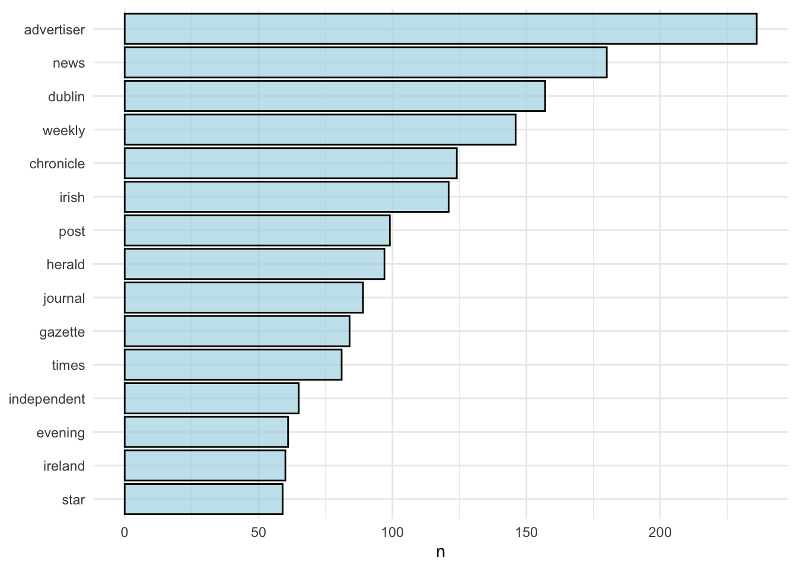
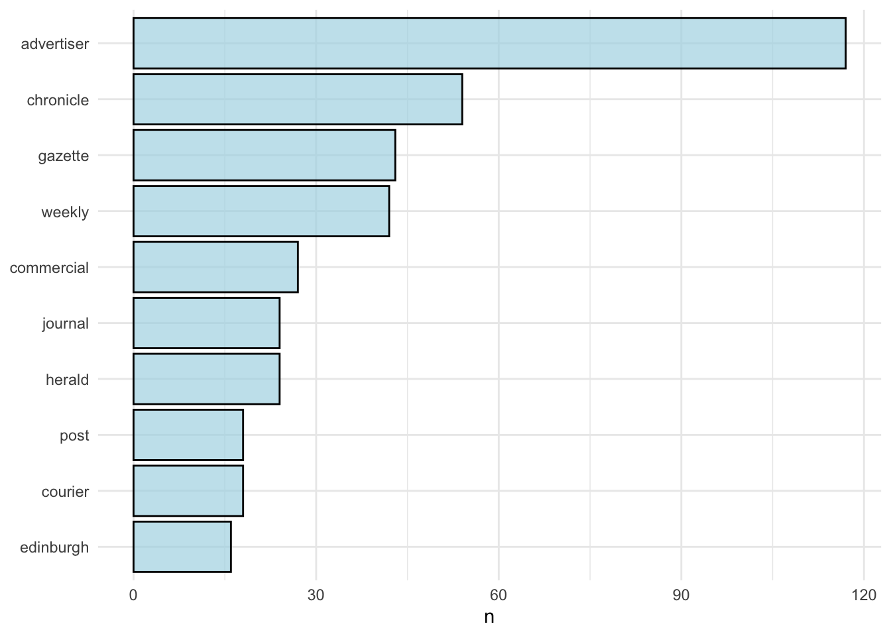
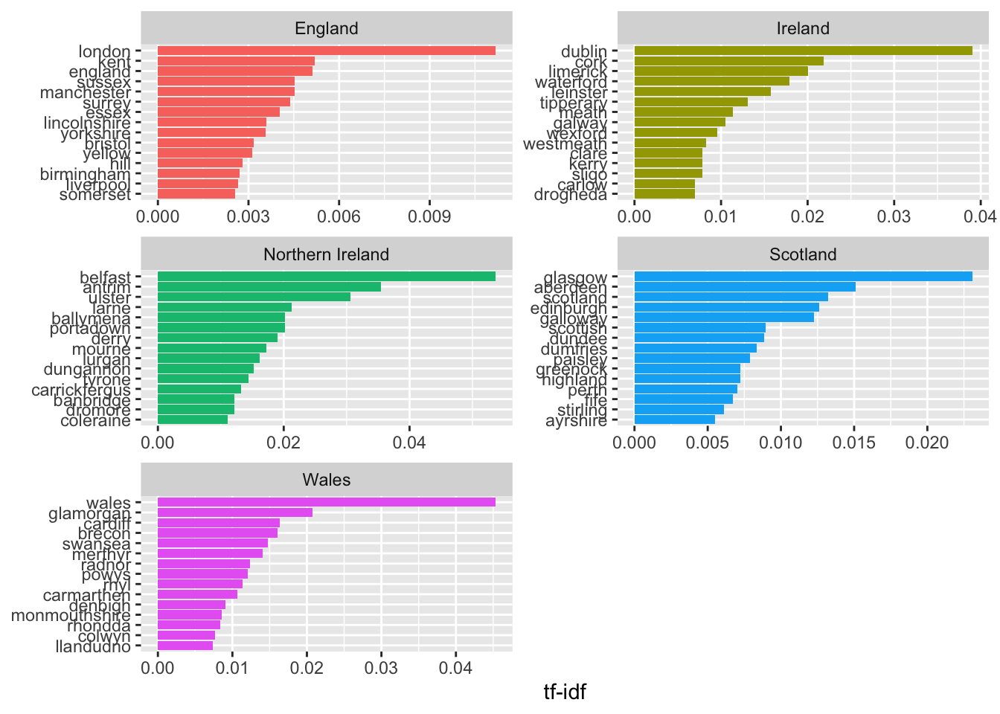
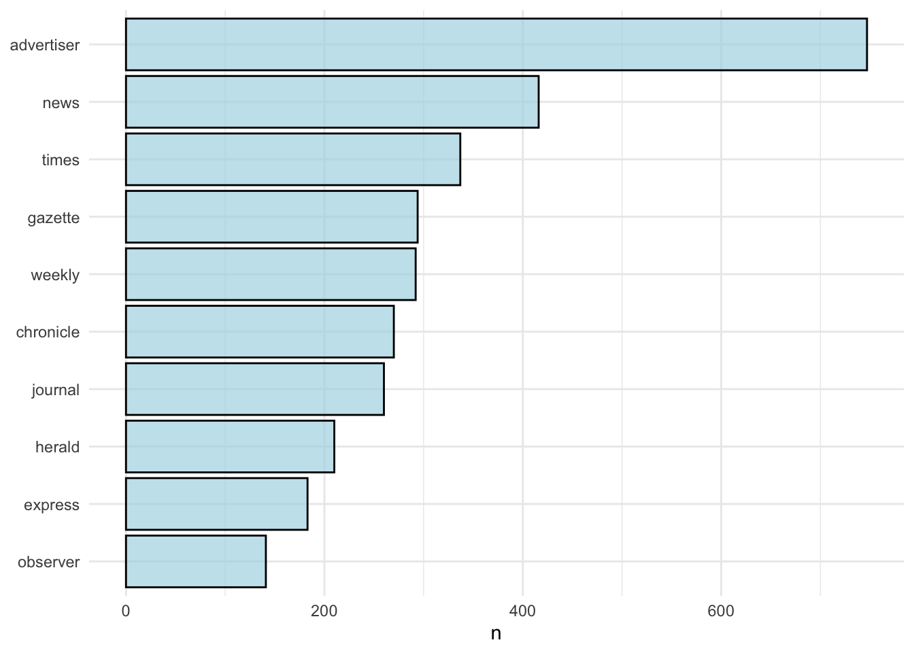
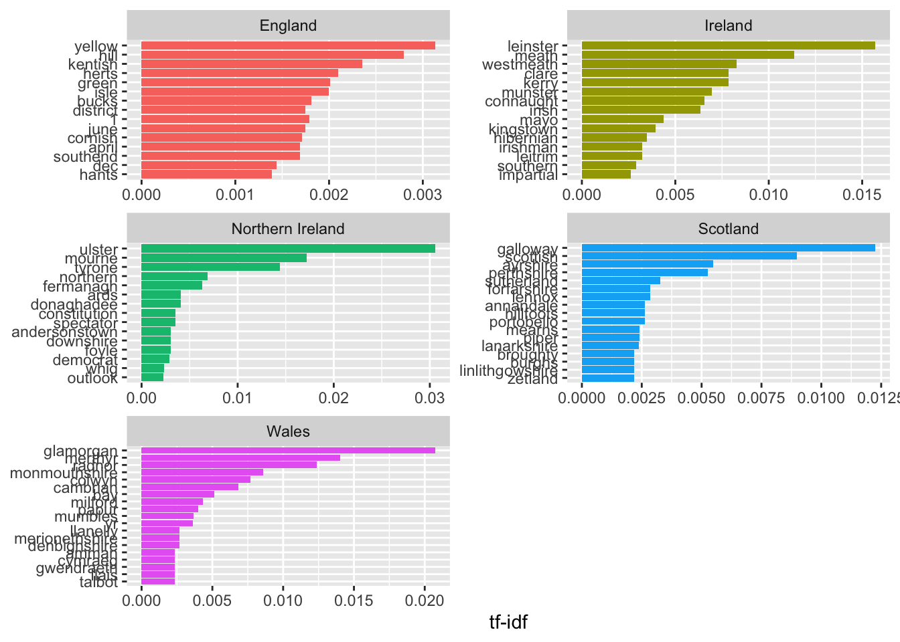
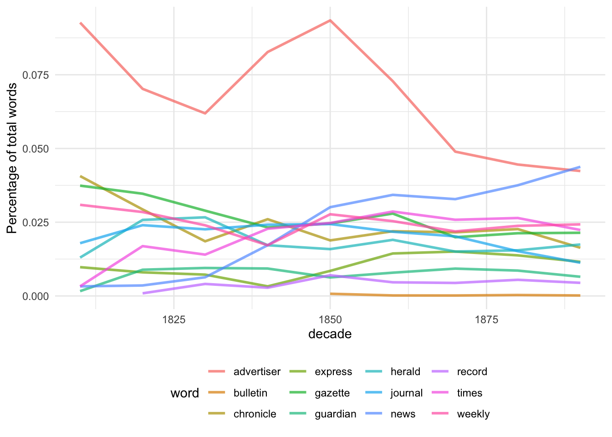
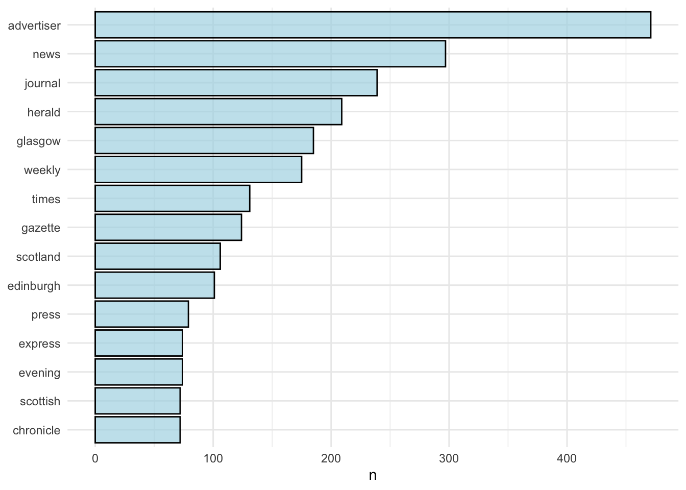
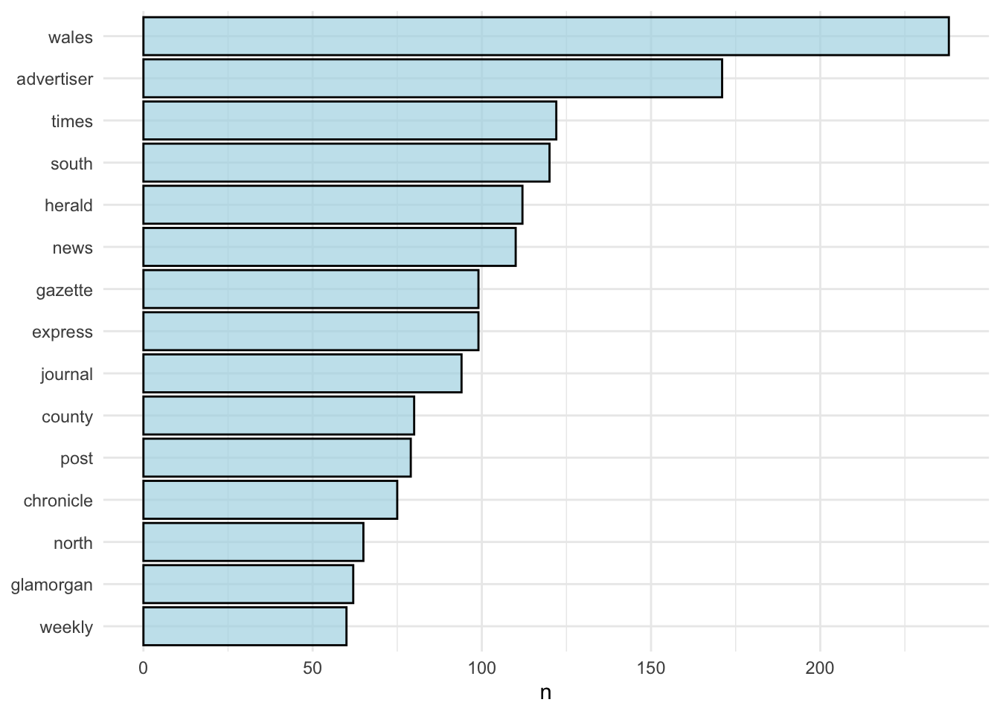

7 Text mining
7.1 What were the most common words used in newspaper titles in the nineteenth century?_
title
7.1.1 Titles don’t just help you identity a newspaper, but they might tell you a little bit about the time in which they were established. With a bibliographic list of all our UK and Irish titles, we can count the most frequent words and track them over time and place, using text mining and data analysis.
7.1.2 What is this document?
This is a markdown file, made from a Jupyter notebook. A jupyter notebook is usually an interactive document which can contain code, images and text, and a markdown file is a static version of that. Each bit of code runs in a cell, and the output is displayed directly below.
The code I’ve used is R, which is a language particularly good for data analysis, but another language, Python, is probably used in Jupyter more frequently. If you’re going to work in R, I would recommend downloading R-Studio to do all your work, which could then be copied-and-pasted over the Jupyter notebook if needed, like I’ve done here.
There are tonnes of places to get started working with R, Python, Jupyter notebooks and so forth, and we would recommend looking here in the first instance:
https://programminghistorian.org/
https://software-carpentry.org/
First we need to load some libraries which we’ll use. A library is just a bunch of functions* grouped together, usually with a particular overall purpose or theme.
‘tidyverse’ is actually a number of libraries with hundreds of useful functions to make lots of data analysis easier. It includes a very powerful plotting library called ‘ggplot2’.
It’s usually the first thing I load, before even deciding what I’m going to do with my data.
‘readxl’ is a library which.. reads excel files..
Lots of this code uses something called piping. This is a function in one of our tidyverse libraries which allows you to do something to your data, and then pass it along to another function using this symbol: %>%
It allows you to string lots of changes to your data together in one block of code, so you might filter it, then pass the filtered data to another function which summarises it, and pass it on to another function which plots it as a graph.
* You might say a function is a pre-made block of code which does something to some data. It has a name and often one or more arguments. The first argument is often a space for you to specify the thing you want to do the function on, and subsequent arguments might be additional parameters.
The first thing we do is load the whole title list as a variable called ‘working_list’, specifying the sheet of the excel file we’d like to use. We’ll dive a little deeper into the structure and how we might filter in another notebook.
working_list <- read_csv(
"BritishAndIrishNewspapersTitleList_20191118.csv",
local = locale(encoding = "latin1"))## Parsed with column specification:
## cols(
## .default = col_character(),
## title_id = col_double(),
## nid = col_double(),
## nlp = col_double(),
## first_date_held = col_double(),
## publication_date_one = col_double(),
## publication_date_two = col_double()
## )## See spec(...) for full column specifications.Let’s just look at the nineteenth century - we’ll use the filter() function from dplyr, which is one of the libraries in the tidyverse. We then use %>% to pipe the filtered data to a function called head(), which displays a set number of rows of your data frama - useful for taking a peek at the structure.
## # A tibble: 2 x 24
## title_id nid nlp publication_tit… edition preceding_titles
## <dbl> <dbl> <dbl> <chr> <chr> <chr>
## 1 13774146 NA NA London gazette <NA> Continues: Oxfo…
## 2 13943676 32666 537 The Newcastle C… <NA> <NA>
## # … with 18 more variables: succeeding_titles <chr>,
## # place_of_publication <chr>, country_of_publication <chr>,
## # general_area_of_coverage <chr>, coverage_city <chr>,
## # first_geographical_subject_heading <chr>,
## # subsequent_geographical_subject_headings <chr>, first_date_held <dbl>,
## # last_date_held <chr>, publication_date_one <dbl>,
## # publication_date_two <dbl>, current_publication_frequency <chr>,
## # publisher <chr>, holdings_more_information <chr>,
## # free_text_information_about_dates_of_publication <chr>,
## # online_status <chr>, link_to_british_newspaper_archive <chr>,
## # explore_link <chr>We have some duplicated newspaper titles in this dataframe. We can get rid of these for this analysis, though there are reasons we left them in which I won’t go into now. We can delete any duplicated titles using a function called distinct() on NID id field.
working_list %>%
filter(last_date_held>1799) %>%
filter(first_date_held<1900) %>%
distinct(NID, .keep_all = TRUE) %>%
head(2)## Warning: Trying to compute distinct() for variables not found in the data:
## - `NID`
## This is an error, but only a warning is raised for compatibility reasons.
## The operation will return the input unchanged.## # A tibble: 2 x 24
## title_id nid nlp publication_tit… edition preceding_titles
## <dbl> <dbl> <dbl> <chr> <chr> <chr>
## 1 13774146 NA NA London gazette <NA> Continues: Oxfo…
## 2 13943676 32666 537 The Newcastle C… <NA> <NA>
## # … with 18 more variables: succeeding_titles <chr>,
## # place_of_publication <chr>, country_of_publication <chr>,
## # general_area_of_coverage <chr>, coverage_city <chr>,
## # first_geographical_subject_heading <chr>,
## # subsequent_geographical_subject_headings <chr>, first_date_held <dbl>,
## # last_date_held <chr>, publication_date_one <dbl>,
## # publication_date_two <dbl>, current_publication_frequency <chr>,
## # publisher <chr>, holdings_more_information <chr>,
## # free_text_information_about_dates_of_publication <chr>,
## # online_status <chr>, link_to_british_newspaper_archive <chr>,
## # explore_link <chr>Select only the information we need. Let’s create a new dataframe, run the filter and distinct functions, and select some date information along with the titles, Afterwards we might want to choose geographic information instead, so we’ll keep our original data frame:
titles_dates = working_list %>%
filter(last_date_held>1799) %>%
filter(first_date_held<1900) %>%
distinct(NID, .keep_all = TRUE) %>%
select(publication_title, first_date_held)## Warning: Trying to compute distinct() for variables not found in the data:
## - `NID`
## This is an error, but only a warning is raised for compatibility reasons.
## The operation will return the input unchanged.To count the title keywords, we can tokenise our data. This splits everything into individual words. For this we need to load a library called ‘tidytext’, which contains lots of functions for text mining.
Now we’ll get rid of stopwords - the very frequently-used words like ‘the’ or ‘an’ and so forth. It’s not always appropriate to remove stopwords, and in fact sometimes they are the most interesting, but I think here it will make things easier to manage.
tokenised_titles_dates = tokenised_titles_dates %>%
anti_join(stop_words) # this does an 'anti-join' which removes any word in one list which also appears in another.## Joining, by = "word"Let’s do some simple analysis first. We can count the most common words overall:
## # A tibble: 20 x 2
## word n
## <chr> <int>
## 1 advertiser 2343
## 2 news 1161
## 3 weekly 918
## 4 gazette 910
## 5 times 890
## 6 chronicle 834
## 7 journal 748
## 8 herald 658
## 9 express 430
## 10 press 387
## 11 north 375
## 12 west 372
## 13 south 367
## 14 london 361
## 15 observer 354
## 16 daily 319
## 17 evening 298
## 18 county 296
## 19 guardian 289
## 20 free 258We can turn it into a bar chart.
tokenised_titles_dates %>%
count(word, sort = TRUE) %>%
mutate(word = reorder(word, n)) %>%
head(20) %>%
ggplot(aes(word, n)) +
geom_col(fill = 'lightblue', color = 'black', alpha = .7) +
xlab(NULL) +
theme_minimal() +
coord_flip()
Advertiser is the most popular word in a title! Lots of other words are at the top which might be expected, like ‘news’, ‘daily’, ‘evening’ and so forth.
It might be more interesting to look at the changes in the top words over time.
This adds a new column with the date ‘floored’ to the previous 20. When we group and count again, everything between 1800 and 1819 will become 1800, everything between 1820 and 1839 will become 1820 and so forth.
tokenised_titles_dates = tokenised_titles_dates %>%
mutate(timespan = first_date_held - first_date_held %% 20)Now look at the top ten title words for each of these twenty-year periods:
1800 - 1819:
tokenised_titles_dates %>%
filter(timespan == '1800') %>%
count(word, sort = TRUE) %>%
ungroup() %>%
mutate(word = reorder(word, n)) %>%
head(10) %>%
ggplot(aes(word, n)) +
geom_col(fill = 'lightblue', color = 'black', alpha = .7) +
xlab(NULL) +
theme_minimal() +
coord_flip()
1820 - 1839:
tokenised_titles_dates %>%
filter(timespan == '1820') %>%
count(word, sort = TRUE) %>%
ungroup() %>%
mutate(word = reorder(word, n)) %>%
head(10) %>%
ggplot(aes(word, n)) +
geom_col(fill = 'lightblue', color = 'black', alpha = .7) +
xlab(NULL) +
theme_minimal() +
coord_flip()
1840 - 1859 (it’s interesting how ‘British’ has fallen out of the top ten, and ‘north’ and ‘south’ have been bumped up. Even something this simple can confirming interesting things about the growth of the regional press!
tokenised_titles_dates %>%
filter(timespan == '1840') %>%
count(word, sort = TRUE) %>%
ungroup() %>%
mutate(word = reorder(word, n)) %>%
head(10) %>%
ggplot(aes(word, n)) +
geom_col(fill = 'lightblue', color = 'black', alpha = .7) +
xlab(NULL) +
theme_minimal() +
coord_flip()
1860 - 1879:
tokenised_titles_dates %>%
filter(timespan == '1860') %>%
count(word, sort = TRUE) %>%
ungroup() %>%
mutate(word = reorder(word, n)) %>%
head(10) %>%
ggplot(aes(word, n)) +
geom_col(fill = 'lightblue', color = 'black', alpha = .7) +
xlab(NULL) +
theme_minimal() +
coord_flip()
1880 - 1899
tokenised_titles_dates %>%
filter(timespan == '1880') %>%
count(word, sort = TRUE) %>%
ungroup() %>%
filter(n > 100) %>%
mutate(word = reorder(word, n)) %>%
ggplot(aes(word, n)) +
geom_col(fill = 'lightblue', color = 'black', alpha = .7) +
xlab(NULL) +
theme_minimal() +
coord_flip()
png
There might be better ways of counting. How about a line chart which tracks a certain number of keywords over time?
We know that the number of titles per year increases a lot over the century, so we’ll need to make a relative rather than absolute values. This next bit adds a count of all the words per decade, and puts it beside each word. Then we can divide one by the other and get a fraction. I’ll show the first few lines of each dataframe to show what I mean.
title_words = tokenised_titles_dates %>%
mutate(decade = first_date_held - first_date_held %% 10) %>%
count(decade, word, sort = TRUE)
head(title_words, 5)## # A tibble: 5 x 3
## decade word n
## <dbl> <chr> <int>
## 1 1850 advertiser 506
## 2 1860 advertiser 425
## 3 1870 advertiser 322
## 4 1880 advertiser 285
## 5 1890 news 276## # A tibble: 5 x 2
## decade total
## <dbl> <int>
## 1 1660 2
## 2 1710 2
## 3 1720 26
## 4 1730 17
## 5 1740 21## Joining, by = "decade"## # A tibble: 5 x 4
## decade word n total
## <dbl> <chr> <int> <int>
## 1 1850 advertiser 506 5416
## 2 1860 advertiser 425 5835
## 3 1870 advertiser 322 6581
## 4 1880 advertiser 285 6396
## 5 1890 news 276 6304We’ll pick a list of terms to plot, because otherwise it’ll be unreadable.
top_terms = c('advertiser',
'news',
'weekly',
'times',
'gazette',
'chronicle',
'herald',
'journal',
'express',
'bulletin',
'record',
'guardian',
'express')Now we draw a plot, using n/total as the y-axis variable to plot the fraction of the total:
title_words %>%
filter(word %in% top_terms) %>%
filter(decade >1800) %>%
ggplot(aes(x = decade, y = n/total, color = word)) +
geom_line(size = 1, alpha = .7,stat = 'identity') +
theme_minimal() +
ylab(label = "Percentage of total words") + theme(legend.position = 'bottom')
Well, that’s quite interesting. Advertiser declines in the second half of the century, and is overtaken by ‘news’ right at the end.
7.1.3 How about differences by country?
Go back to the working list and make a version with country information:
titles_countries = working_list %>%
select(publication_title, country_of_publication)
tokenised_titles_countries = titles_countries %>%
unnest_tokens(word, publication_title)
tokenised_titles_countries = tokenised_titles_countries %>%
anti_join(stop_words)## Joining, by = "word"Let’s make an overall chart for each country:
England:
tokenised_titles_countries %>%
filter(country_of_publication == 'England') %>%
count(word, sort = TRUE) %>%
ungroup() %>%
mutate(word = reorder(word, n)) %>%
head(15) %>%
ggplot(aes(word, n)) +
geom_col(fill = 'lightblue', color = 'black', alpha = .7) +
xlab(NULL) +
theme_minimal() +
coord_flip()
Scotland:
tokenised_titles_countries %>%
filter(country_of_publication == 'Scotland') %>%
count(word, sort = TRUE) %>%
ungroup() %>%
filter(n > 40) %>%
mutate(word = reorder(word, n)) %>%
head(15) %>%
ggplot(aes(word, n)) +
geom_col(fill = 'lightblue', color = 'black', alpha = .7) +
xlab(NULL) +
theme_minimal() +
coord_flip()
Ireland:
tokenised_titles_countries %>%
filter(country_of_publication %in% c('Ireland', 'Northern Ireland')) %>%
count(word, sort = TRUE) %>%
ungroup() %>%
mutate(word = reorder(word, n)) %>%
head(15) %>%
ggplot(aes(word, n)) +
geom_col(fill = 'lightblue', color = 'black', alpha = .7) +
xlab(NULL) +
theme_minimal() +
coord_flip()
Wales:
tokenised_titles_countries %>%
filter(country_of_publication == 'Wales') %>%
count(word, sort = TRUE) %>%
ungroup() %>%
mutate(word = reorder(word, n)) %>%
head(15) %>%
ggplot(aes(word, n)) +
geom_col(fill = 'lightblue', color = 'black', alpha = .7) +
xlab(NULL) +
theme_minimal() +
coord_flip()
How about looking for the most unique terms for each country? That might tell us something interesting.
First we’ll select just the key countries:
Next we’ll use a function which gives the ‘tf-idf’ score for each word. This measures the frequency of the word in comparison to its frequency in all other countries, giving us words that are more unique to titles from that country.
total_by_country = tokenised_titles_countries %>%
filter(country_of_publication %in% countryList) %>%
count(country_of_publication, word, sort = TRUE)
total_by_country <- total_by_country %>%
bind_tf_idf(word, country_of_publication, n)total_by_country %>%
arrange(desc(tf_idf)) %>%
mutate(word = factor(word, levels = rev(unique(word)))) %>%
group_by(country_of_publication) %>%
top_n(15) %>%
ungroup() %>%
ggplot(aes(word, tf_idf, fill = country_of_publication)) +
geom_col(show.legend = FALSE) +
labs(x = NULL, y = "tf-idf") +
facet_wrap(~country_of_publication, ncol = 2, scales = "free") +
coord_flip()## Selecting by tf_idfUnsurprisingly, this mostly gives us placenames, as used in the titles, which are obviously only going to be used in one country. There’s a couple of interesting things: ‘Wales’ and ‘Scotland’ have a high score, but not ‘Ireland’. Why would Ireland not be used in a newspaper title in the same way as Welsh or Scottish newspapers?
We need a way to try and filter out geographic places as they’re drowning out other potentially interesting terms. We can make a list of places from our original title list which would be a good start.
all_places = read_csv(
"BritishAndIrishNewspapersTitleList_20191118.csv",
local = locale(encoding = "latin1"))## Parsed with column specification:
## cols(
## .default = col_character(),
## title_id = col_double(),
## nid = col_double(),
## nlp = col_double(),
## first_date_held = col_double(),
## publication_date_one = col_double(),
## publication_date_two = col_double()
## )## See spec(...) for full column specifications.list_of_places = c(all_places$first_geographical_subject_heading,
all_places$subsequent_geographical_subject_headings,
all_places$general_area_of_coverage,
all_places$coverage_city,
all_places$place_of_publication,
all_places$country_of_publication)
list_of_places = as.data.frame(list_of_places) %>%
group_by(list_of_places) %>% count() %>% select(list_of_places)## Warning: Factor `list_of_places` contains implicit NA, consider using
## `forcats::fct_explicit_na`
## Warning: Factor `list_of_places` contains implicit NA, consider using
## `forcats::fct_explicit_na`It’s a bit crude but it’s given us a list of 5,000 or so places which we can use to filter our word list.
Plotting the filtered list:
total_by_country %>%
filter(!word %in% list_of_places) %>%
arrange(desc(tf_idf)) %>%
mutate(word = factor(word, levels = rev(unique(word)))) %>%
group_by(country_of_publication) %>%
top_n(15) %>%
ungroup() %>%
ggplot(aes(word, tf_idf, fill = country_of_publication)) +
geom_col(show.legend = FALSE) +
labs(x = NULL, y = "tf-idf") +
facet_wrap(~country_of_publication, ncol = 2, scales = "free") +
coord_flip()## Selecting by tf_idf
There are still lots of geographic terms, but there are some other words ‘unique’ to each country. Ireland and Northern Ireland high-scoring words are particularly interesting (of course we’re looking at 19th century titles so the division is meaningless, but it still represents some kind of regionality). Only Irish titles tend to have ideological terms like ‘nationalist’, ‘democrat’, ‘loyalty’, ‘impartial’ and so forth. Newspapers with ‘illustrated’ or ‘Sunday’ in the title are unique to England, and, intriguingly, ‘visitors’.